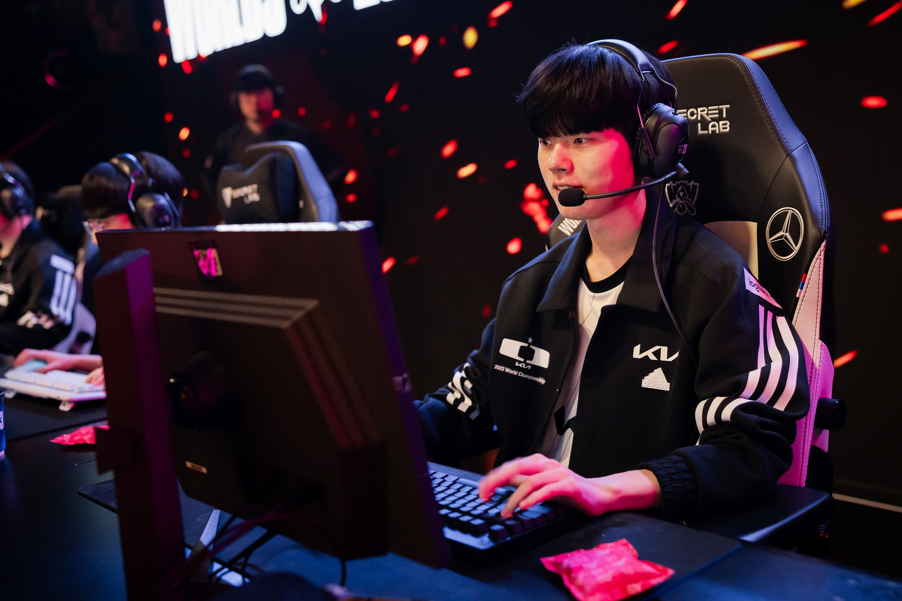

Melhores jogadores de LoL por função em 2024
Esses jogadores consolidaram seu lugar como alguns dos melhores jogadores de League of Legends do mundo. Embora seja absolutamente impossível nomear apenas um jogador de cada função, abaixo você encontrará nossa lista pessoal dos melhores jogadores de League of Legends que já passaram pelo Summoners Rift.
Melhor Rota Superior: MaRin

Melhor Rota Selva: Peanut

Melhor Rota Meio: Faker

Melhor Rota Atirador: Deft
Melhor Rota Suporte: Keri